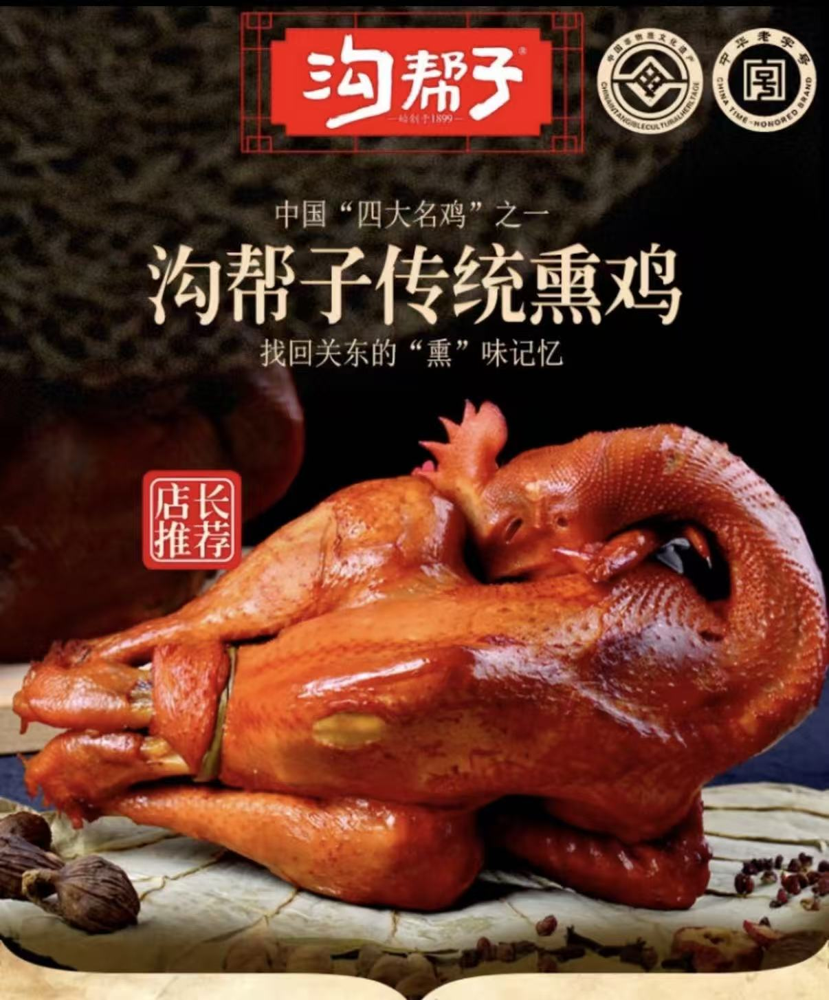

品牌故事
辽西烧鸡网站围绕地方特色熟食品牌进行设计，突出传统工艺、真实商品图片和线上展示能力。网站以红色作为主视觉颜色，搭配清晰的商品卡片和导航结构。

本项目在前台部分实现首页轮播图、产品列表、商品详情和品牌介绍，在后台部分设计管理员登录、商品管理、会员管理和订单管理等模块。线上展示版本采用静态页面发布，以适配 GitHub Pages 和 Cloudflare。
辽西烧鸡网站围绕地方特色熟食品牌进行设计，突出传统工艺、真实商品图片和线上展示能力。网站以红色作为主视觉颜色，搭配清晰的商品卡片和导航结构。

本项目在前台部分实现首页轮播图、产品列表、商品详情和品牌介绍，在后台部分设计管理员登录、商品管理、会员管理和订单管理等模块。线上展示版本采用静态页面发布，以适配 GitHub Pages 和 Cloudflare。